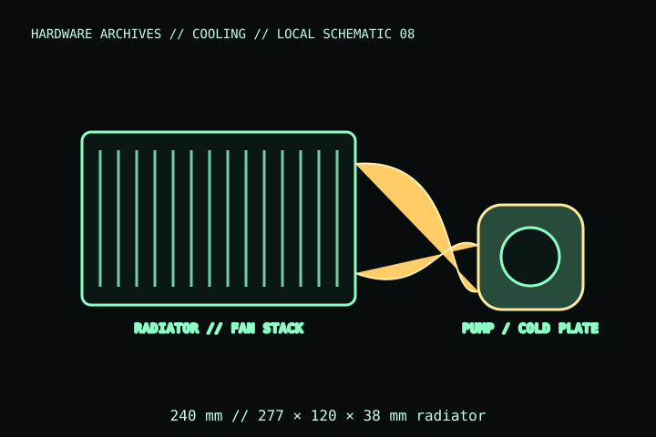

[ INDIVIDUAL COMPONENT // COOLING ]
ARCTIC Liquid Freezer III 240 (Black)
The black, 240 mm, non-A-RGB ARCTIC Liquid Freezer III, article ACFRE00134A. Distinct from the existing Liquid Freezer III 360 record; radiator, fans, and socket hardware are model-specific.

IDENTIFICATION: Match the complete model name, suffix, article number, bundle, revision, and host manual to the physical label before installation. Similar product names and variants may use different wiring or dimensions.
Specifications
| Catalog subcategory | All-in-one liquid coolers |
|---|---|
| Exact model | Liquid Freezer III 240 Black; article ACFRE00134A |
| Radiator | 277 × 120 × 38 mm radiator; allow additional space for fans and fittings |
| Fans / pump | 2 × 120 mm P12 PWM PST radiator fans; integrated pump and VRM fan |
| Wiring | Combined PWM cable arrangement for pump, VRM fan, and radiator fans; use the exact included cable/manual. |
| Mounting / host | Intel LGA1851/LGA1700 and AMD AM5/AM4 per manufacturer listing; confirm case supports a 240 mm radiator and its 38 mm thickness. |
Compatibility, installation & service
- Check the exact model’s supported socket list and included socket-specific hardware; the contact-frame arrangement differs by platform.
- Confirm radiator length/thickness, fan stack, tubing route, memory/VRM clearance, and case mounting position before assembly.
- Use the included cable and documented header connections; do not power the pump/fans from an under-rated header.
Service notes
This is a sealed AIO; do not open or refill it. Inspect fittings, tubing, radiator, and pump for leaks or damage; power down and replace the cooler if leakage or pump failure is suspected. Clean radiator fins without bending them.
Manufacturer references
- ARCTIC — Liquid Freezer III 240Manufacturer page for exact article number, mounting compatibility, and product documentation.
- ARCTIC — SupportManufacturer installation manuals and support.
Verify fit, wiring, and ratings against the manufacturer document for the exact unit and host. This catalog record is an identification aid, not a compatibility guarantee.